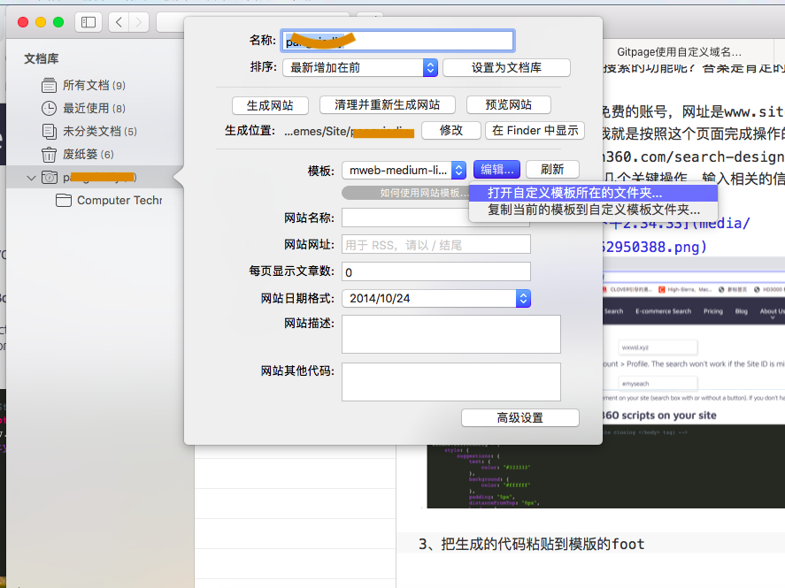

现在我们已经搭建了免费的网站，有了自己的门户，但是随着网站规模越来越庞大，要是找到站内的文章会是一件很消耗时间的事情，于是我们想能否有一种不用开发的方式就可以给自己的网站加入搜索的功能呢？答案是肯定的，下面就请随着我的操作来一起完成吧！
1、首先到这个网站申请一个免费的账号，网址是 https://www.sitesearch360.com
2、在网站内有一个引导页，我就是按照这个页面完成操作的。 https://www.sitesearch360.com/search-designer/ 点开这个页面，在中间位置有几个关键操作，输入相关的信息会生成JS代码与Html代码。
3、把生成的代码粘贴到模版的footer.html 
代码如下
<!-- Start of Site Search 360 script (put right before the closing </body> tag) -->
<script type="text/javascript">
window.ss360Config = {
style: {
suggestions: {
text: {
color: "#333333"
},
background: {
color: "#ffffff"
},
padding: "5px",
distanceFromTop: "0px",
border: {
color: "#dddddd",
radius: "0px"
}
},
searchBox: {
text: {
color: "#333333",
size: "14px"
},
background: {
color: "#ffffff"
},
border: {
color: "#dddddd",
radius: "0px"
},
padding: "8px",
icon: {
image: "magnifier",
color: "#666666"
}
}
},
searchBox: {
selector: "#myseach"
},
tracking: {
providers: []
},
siteId: "wxwsl.xyz",
showErrors: false
};
var e=document.createElement("script");
e.async=!0;
e.src="https://cdn.sitesearch360.com/v13/sitesearch360-v13.min.js";
document.getElementsByTagName("body")[0].appendChild(e);
</script>
<!-- End of Site Search 360 script -->
<table width="600" border="0" cellspacing="0" cellpadding="0" align="center">
<tbody>
<tr >
<td ><input id="myseach" type="search" placeholder="Search…" />
</td>
</tr>
</tbody>
</table>
</body>
</html>
4、发布后是见证奇迹的时刻!